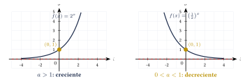
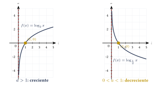
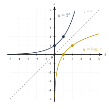

Capítulo 18
Funciones exponenciales y logarítmicas
UNAMIPNCENEVAL
Las funciones exponenciales y logarítmicas permiten describir procesos en los que una cantidad cambia de manera multiplicativa. Aparecen en modelos de crecimiento poblacional, interés compuesto, decaimiento radiactivo y escalas logarítmicas. Ambas familias están estrechamente relacionadas, pues una función logarítmica es la inversa de una función exponencial con la misma base.
En este capítulo estudiarás sus definiciones, propiedades, gráficas y aplicaciones en la resolución de ecuaciones.
18.1 Función exponencial#
Una función exponencial tiene la forma:
donde:
La base \(a\) es una constante y la variable \(x\) aparece en el exponente.
Las condiciones impuestas a la base permiten obtener una función exponencial real con las propiedades habituales.
- Si \(a=1\), entonces: \[f(x)=1^x=1,\] por lo que se obtiene una función constante.
- Si \(a=0\), la expresión \(0^x\) no está definida para todos los números reales.
- Si \(a<0\), la expresión \(a^x\) no produce valores reales para todos los exponentes reales.
Sea:
Entonces:
- su dominio es: \[D_f=\R;\]
- su rango es: \[R_f=(0,\infty);\]
- sus valores siempre son positivos: \[a^x>0;\]
- interseca el eje \(y\) en: \[(0,1),\] porque: \[a^0=1;\]
- no interseca el eje \(x\);
- si \(a>1\), la función es estrictamente creciente;
- si \(0<a<1\), la función es estrictamente decreciente;
- la recta: \[y=0\] es una asíntota horizontal.
Las funciones exponenciales crecientes y decrecientes pueden compararse mediante planos con la misma escala:

Aunque las dos gráficas tienen comportamientos diferentes, ambas pasan por el punto:
y se aproximan al eje \(x\) sin tocarlo. Esto explica por qué el rango de cualquier función exponencial es:
18.2 Ecuaciones exponenciales#
Si:
entonces:
Esta propiedad permite resolver ecuaciones exponenciales cuando ambos miembros pueden expresarse como potencias de la misma base.
Resuelve:
Ver solución
Expresamos \(9\) como una potencia de base \(3\):
Entonces:
Igualamos los exponentes:
Resuelve:
Ver solución
Como:
se tiene:
Igualamos los exponentes:
Resuelve:
Ver solución
Expresamos el segundo miembro como una potencia de base \(5\):
Por tanto:
Igualamos los exponentes:
Cuando ambos miembros de una ecuación exponencial pueden escribirse con la misma base, se igualan los exponentes.
Si no es posible obtener una base común de manera conveniente, se aplican logaritmos en ambos miembros.
Resuelve:
Ver solución
No es posible expresar \(7\) como una potencia entera de base \(2\). Aplicamos logaritmo en ambos miembros:
Utilizamos la propiedad de la potencia:
Despejamos:
Este valor también puede escribirse como:
Aproximadamente:
18.3 Función logarítmica#
La función logarítmica de base \(a\) es la función inversa de la función exponencial de la misma base.
Se define mediante la equivalencia:
donde:
La expresión \(\log_a x\) representa el exponente al que debe elevarse la base \(a\) para obtener \(x\).
Sea:
Entonces:
- su dominio es: \[D_f=(0,\infty);\]
- su rango es: \[R_f=\R;\]
- interseca el eje \(x\) en: \[(1,0),\] porque: \[\log_a 1=0;\]
- no interseca el eje \(y\);
- si \(a>1\), es estrictamente creciente;
- si \(0<a<1\), es estrictamente decreciente;
- la recta: \[x=0\] es una asíntota vertical.
Las funciones logarítmicas creciente y decreciente pueden compararse mediante planos con la misma escala:

18.4 Relación entre las funciones exponencial y logarítmica#
Las expresiones:
y
son equivalentes, siempre que:
Las funciones:
y
son inversas. Por tanto:
para todo \(x\in\R\), y:
para todo \(x>0\).
Como las funciones son inversas, sus gráficas son simétricas respecto de la recta:
Esta relación puede observarse en el siguiente plano:

Los puntos correspondientes intercambian sus coordenadas. Por ejemplo, el punto
pertenece a la gráfica de \(y=2^x\), mientras que el punto
pertenece a la gráfica de \(y=\log_2x\). Ambos puntos son simétricos respecto de la recta \(y=x\)Los puntos correspondientes intercambian sus coordenadas. Por ejemplo, el punto
pertenece a la gráfica de \(y=2^x\), mientras que el punto
pertenece a la gráfica de \(y=\log_2x\). Ambos puntos son simétricos respecto de la recta \(y=x\).
Convierte a forma exponencial:
Ver solución
La forma exponencial equivalente es:
Por tanto:
Convierte a forma logarítmica:
Ver solución
La base es \(3\), el resultado es \(81\) y el exponente es \(4\). Por tanto:
Evalúa:
Ver solución
Buscamos el exponente al que debe elevarse \(2\) para obtener \(8\). Como:
entonces:
Para escribir:
deben cumplirse las condiciones:
Por esta razón, al transformar una expresión exponencial en logarítmica deben verificarse las condiciones de la base y del argumento.
18.5 Logaritmos comunes y naturales#
El logaritmo común o logaritmo decimal tiene base \(10\). Cuando la base no se escribe, se entiende:
El logaritmo natural tiene como base el número \(e\) y se denota mediante:
El número \(e\) es una constante irracional cuyo valor aproximado es:
La función exponencial natural:
y la función logaritmo natural:
son inversas.
18.6 Propiedades de los logaritmos#
Sean:
Entonces:
- Logaritmo de un producto \[\log_a(AB) = \log_a A+\log_a B.\]
- Logaritmo de un cociente \[\log_a\left(\frac{A}{B}\right) = \log_a A-\log_a B.\]
- Logaritmo de una potencia \[\log_a(A^n) = n\log_a A.\]
- Logaritmo de una raíz \[\log_a\sqrt[n]{A} = \frac{1}{n}\log_a A, \qquad n\in\N.\]
- Logaritmo de la unidad \[\log_a1=0.\]
- Logaritmo de la base \[\log_a a=1.\]
Para cualquier base válida \(b\):
En particular:
y:
Expande:
Ver solución
Suponiendo que \(x>0\) y \(y>0\), aplicamos la propiedad del producto:
Expande:
Ver solución
Suponiendo que \(x>0\) y \(y\neq 0\), la expresión interior es positiva cuando se cumplen las restricciones correspondientes. Aplicamos las propiedades:
Si además \(y>0\), puede escribirse:
Expande:
Ver solución
Suponiendo que \(x>0\) y \(y>0\):
Los logaritmos no se distribuyen sobre sumas ni diferencias. En general:
De manera similar:
Las propiedades de suma y resta se aplican al logaritmo de un producto o de un cociente, no al logaritmo de una suma o diferencia.
18.7 Ecuaciones logarítmicas#
Para resolver una ecuación logarítmica:
- se establecen las restricciones que hacen positivos todos los argumentos de los logaritmos;
- se agrupan los logaritmos cuando sea necesario;
- se aplican las propiedades para escribir un solo logaritmo;
- se transforma la ecuación a su forma exponencial;
- se resuelve la ecuación resultante;
- se comprueba cada solución en la ecuación original.
Resuelve:
Ver solución
Primero establecemos la restricción:
por lo que:
Convertimos la ecuación a forma exponencial:
Resolvemos:
Como \(7>-1\), la solución es válida.
Por tanto:
Resuelve:
Ver solución
Primero establecemos las restricciones:
y:
Por tanto:
Aplicamos la propiedad del producto:
Como el logaritmo es decimal, transformamos la ecuación a forma exponencial:
Entonces:
Factorizamos:
Las soluciones de la ecuación algebraica son:
Sin embargo, la restricción era \(x>3\). Por tanto, \(x=-2\) no es válido.
La única solución es:
Si:
con:
entonces:
Resuelve:
Ver solución
Establecemos las restricciones:
y:
Por tanto:
La restricción conjunta es:
Como los logaritmos tienen la misma base:
Resolvemos:
Como \(5>\frac{1}{2}\), la solución es válida:
Toda solución de una ecuación logarítmica debe comprobarse en la ecuación original. Si algún argumento resulta cero o negativo, el valor debe descartarse.
Estas soluciones no válidas pueden aparecer después de eliminar los logaritmos y resolver la ecuación algebraica resultante.
18.8 Ejercicios propuestos#
¿Cuál de las siguientes expresiones representa una función exponencial?
Ver solución
\(g(x) = 2^x\) es exponencial porque la variable está en el exponente. Las demás no lo son: \(f(x) = x^2\) es cuadrática, \(h(x) = x + 1\) es lineal, \(k(x) = 3^2 = 9\) es constante.
Resuelve:
Ver solución
\(8 = 2^3\), entonces: \[3x + 2 = 3 \Longrightarrow 3x = 1 \Longrightarrow x = \frac{1}{3}.\]
Resuelve:
Ver solución
\(\frac{1}{25} = 5^{-2}\), entonces: \[2x = -2 \Longrightarrow x = -1.\]
Convierte a forma exponencial:
Ver solución
\(2^3 = x\), entonces \(x = 8\).
Convierte a forma logarítmica:
Ver solución
\(\log_3 81 = 4\).
Evalúa:
Ver solución
\(5^3 = 125\), entonces \(\log_5 125 = 3\).
Expande, suponiendo que las variables representan números positivos:
Ver solución
Expande, suponiendo que \(x>0\) y \(y>0\):
Ver solución
Encuentra el dominio y la asíntota vertical de:
Ver solución
El argumento debe ser positivo: \(x - 4 > 0\), entonces \(x > 4\). La asíntota vertical está en \(x = 4\).
Encuentra el dominio de:
Ver solución
\(x - 5 > 0\), entonces \(x > 5\). \[D_f = (5, \infty).\]
Resuelve:
Ver solución
\(3^2 = x + 2\), entonces \(x + 2 = 9\), \(x = 7\).
Resuelve e indica las restricciones:
Ver solución
Combinamos: \(\log[x(x - 1)] = \log 6\), entonces \(x(x - 1) = 6\). \[x^2 - x - 6 = 0 \Longrightarrow (x - 3)(x + 2) = 0.\] \(x = 3\) o \(x = -2\). Verificamos: \(x = -2\) invalida los logaritmos. Solución: \(x = 3\).